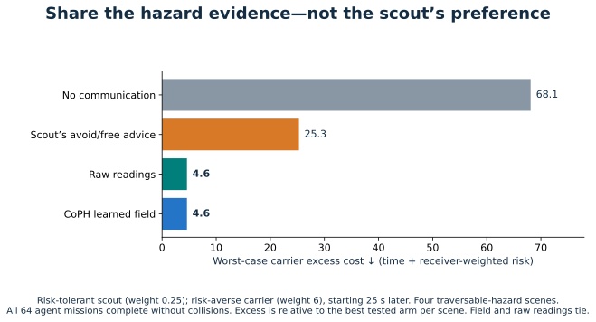

Pause or jump to a recorded event below.
COOPERATIVE NAVIGATION
Learning to navigate
as conditions change.
A robot may encounter more drag than expected, discover a blocked route, or need to avoid terrain that its teammate can cross. CoPH updates its models from local measurements and shared observations, then uses those models to choose routes and control motion.
All demos are recorded simulations. Motion takes place in a plane; the height of a model surface shows energy or estimated risk.
WHY LEARN DURING A MISSION?
What happens when the dynamics change?
Four agents start with drag 0.25. At 20 seconds, drag changes and the landmarks move, so the agents must travel again. A fixed model keeps the old drag value. CoPH estimates the new value from the motion it measures.

Why share observations instead of advice?
The scout has risk weight 0.25; the carrier has weight 6. A route the scout is willing to cross may be too costly for the carrier. Sending hazard values lets the carrier choose for itself. Sending only “avoid” or “free” loses that information.

FIVE EXPERIMENTS
Watch what changes and why.
Choose a demo to see the robots, their models and the results side by side. Use the event buttons to jump to a drag change, warning or route decision.
MAIN RESULTS
What the experiments show.
Adapting to new drag
CoPH outperforms an initially correct fixed model after drag increases or decreases. Each direction is tested on 30 starts.
Sharing hazard information
A carrier can use the scout’s hazard estimates with its own risk weight. Raw readings work equally well in this pilot. We have not shown an extra navigation benefit from receiver fitting or historical replay.
Warnings in both directions
One warning changes a teammate’s route, allowing it to discover another blockage sooner and send a warning back. In the displayed layout, this saves the team 27.1 m of detour.
Avoiding deadlock
The protection layer uses a fixed priority rule so agents can take turns through a shared crossing. This resolves the tested deadlocks; the yielding rule is programmed, not learned.
BASELINES AND RELATED WORK
How CoPH compares.
We have compared CoPH directly with phMARL. DistGP and the two scouting planners address related problems, but we have not yet run matched comparisons with them.
Completed comparison: matched phMARL
phMARL trains a control policy before deployment, using attention and port-Hamiltonian structure. We test its published checkpoint against CoPH on the same task, with the same assignments, targets and protection. CoPH estimates damping during the mission. Higher return is better. The comparison applies to this checkpoint and task.
| Evaluation | Matched phMARL | Online CoPH | Paired return gain, 95% interval |
|---|---|---|---|
| 50 held-out starts | Return −182.8; coverage 31/50 | Return −70.4; coverage 50/50 | +112.4 [102.4, 122.8] |
| 100 fresh starts, final protection | Return −176.3; coverage 58/100 | Return −71.1; coverage 99/100 | +105.3 [97.9, 112.6] |
| Drag changes 0.25 → 0.45; 30 starts | Post-change return −129.9 | Post-change return −72.9 | +57.1 [50.7, 63.6] |
| Drag changes 0.25 → 0.10; 30 starts | Post-change return −101.3 | Post-change return −54.4 | +46.9 [41.8, 52.1] |
Coverage means all landmarks covered in an episode. The 50-start cohort had one contact in each protected arm; the 100-start cohort also had one contact in each compared arm. The cohorts and protection configurations are reported separately. Dynamics-change rows measure only the post-change phase. Against an initially correct model frozen at damping 0.25, online CoPH gains +33.3 [30.6, 36.0] after the increase and +29.7 [24.8, 34.8] after the decrease.
How the related methods work
The results below are reported by the original papers on their own tasks. They are not direct comparisons with CoPH.
| Method | How it works | Published evidence | Comparison with CoPH |
|---|---|---|---|
| phMARL | Each robot uses its own state and neighboring states. A policy trained with soft actor-critic uses attention and port-Hamiltonian structure to produce actions. | The authors test cooperative control tasks and different team sizes. | Results are shown above. The tested phMARL policy stays fixed; CoPH updates its dynamics estimate during the mission. |
| DistGP | Each robot fits a sparse Gaussian process to its measurements and exchanges Gaussian messages with neighbors. The result is a shared field estimate with uncertainty. | Central Atlantic sea-surface-temperature prediction MSE: 0.134 ± 0.001, versus DiNNO’s 0.175 ± 0.001 (Table I). | Not yet compared. Both methods would receive the same measurements and use the same route scorer. DistGP already provides cooperative reconstruction and uncertainty. |
| UGV-conditioned exposure planning | Aerial robots measure hazards to update an exposure map. A ground robot plans a route using that map, and its planned corridor guides further aerial sensing. | Its study reports 38% lower cumulative UGV exposure than terrain-semantic replanning, and redundant aerial coverage reduced from 38.8% to 3.7%. | Not yet compared. The proposed test asks whether different robot objectives and warnings in both directions change the outcome. |
| Traversing Mars | A scout explores uncertain terrain along a follower’s likely route. New measurements update the route; exploration stops when the planning conditions are met. | Time to find the optimal follower path: 293 ± 80 s, versus 378 ± 41 s for goal-aware exploration (Table I; uncertainty as reported). | Not evaluated against CoPH. This work already shows how a scout can improve a follower’s route. |
So far, our DistGP and exposure-planner checks cover parts of their implementations. We have not completed their benchmark reproductions or shown an advantage over them.
Baseline implementation recordsCode and experiment details
The repository includes the learner, experiment scripts, numerical checks and result summaries. The full run archive is stored separately and is needed to regenerate the animations.